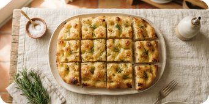

Rosemary Focaccia
Tags

Golden, crisp edges and a soft, airy centre. Olive oil, fresh rosemary and flaky sea salt make this easy focaccia perfect for sharing or dipping.
Dietary & Allergens
Dietary preference: Vegan
Contains: Wheat / gluten
Substitutions & cross-contact
Try thyme instead of rosemary, or add sliced olives. Check all ingredient labels and your kitchen for possible cross-contact. Not suitable for wheat allergies or coeliac disease.
Unselected allergens are not an allergen-free claim.
Ingredients
For 1 tray • 12 pieces
- 500 gStrong white bread flour
- 400 mlLukewarm water
- 7 gInstant dried yeast
- 10 gFine salt
- 60 mlExtra virgin olive oil, divided
- 2 tbspFresh rosemary leaves
- 1 tspCaster sugar
- 2 clovesGarlic, thinly sliced (optional)
- 1 tspFlaky sea salt
Instructions
- 1
Mix and rest
Mix the flour, yeast, sugar and fine salt in a large bowl. Add the water and 20 ml olive oil; stir into a sticky dough. Cover and rest for 20 minutes.
- 2
Fold and rise
With wet hands, stretch one edge of the dough up and fold it over. Turn the bowl and repeat on all four sides. Cover and leave in a warm place for 1–1½ hours, until doubled and bubbly.
- 3
Shape and prove
Coat a 23 × 33 cm baking tin with 20 ml oil. Tip in the dough and gently stretch towards the corners. Rest for 10 minutes if it resists. Cover and prove for 45–60 minutes, until puffy. Heat the oven to 220°C (200°C fan / 425°F).
- 4
Dimple, bake and serve
Drizzle with the remaining 20 ml oil. Press oiled fingertips into the dough to make deep dimples. Scatter over rosemary, flaky salt and optional garlic, tucking garlic into the dimples. Bake for 25–30 minutes until golden. Cool on a rack for 10 minutes, then cut into 12 pieces.